Un CV dit ce que j'ai fait. Ce qui suit dit qui je suis, comment je fonctionne avec les autres, et ce qui compte vraiment pour moi.
« Son travail a été mené de manière méthodique et organisée, avec un souci constant de fiabilité. »Peggy Vacca, STEDIA Consulting
Une année à la tête du BDE GACO m'a surtout appris à faire confiance : déléguer sans lâcher, écouter une équipe de 10 personnes pour que chacun trouve sa place, et rester calme quand un événement part de travers. La gestion de budget et la coordination institutionnelle, ça s'apprend. Fédérer des gens autour d'un projet commun, ça se travaille chaque jour.
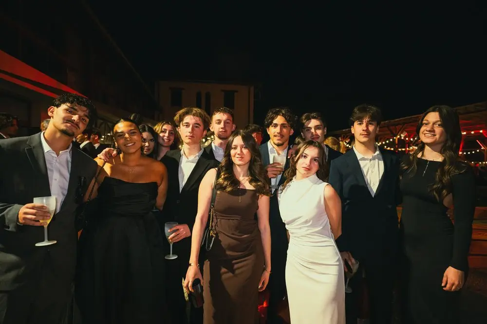
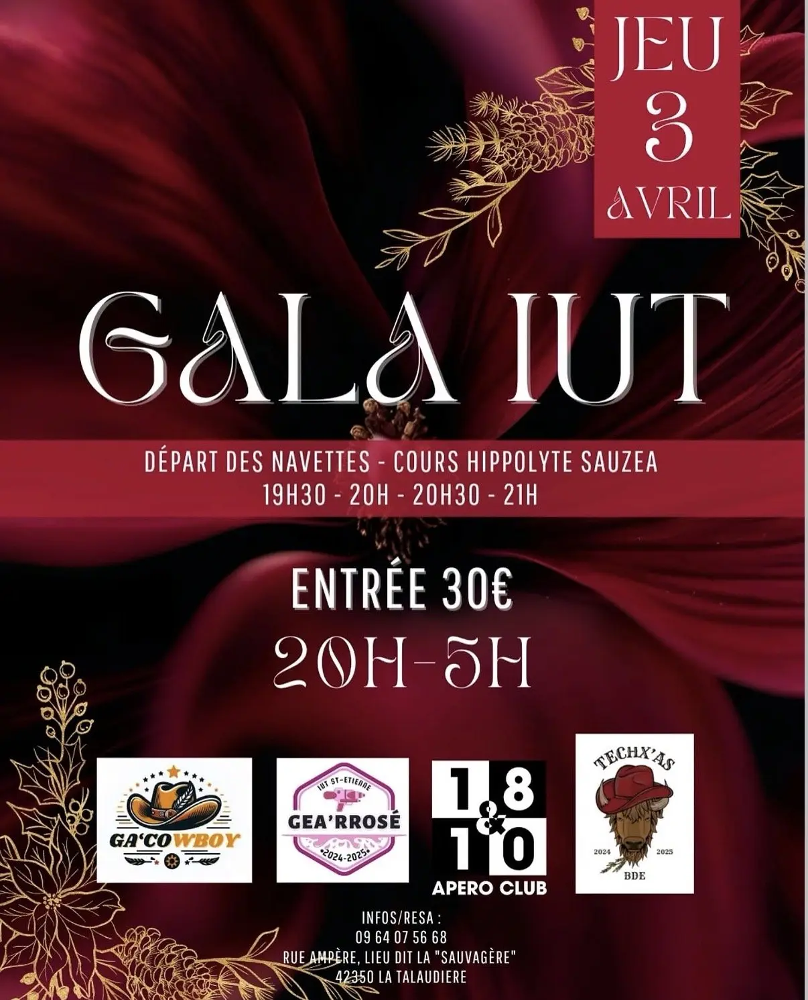
De 2025 à 2026, mon double diplôme s'est joué à Chicoutimi, au Québec : nouveau système académique, nouvel accent, nouvelle vie, loin de mes repères. J'en retiens l'essentiel : rester humble face à une culture différente, observer avant de juger, construire des liens avec des gens très différents de moi.
Continuez de scroller, l'immersion commence
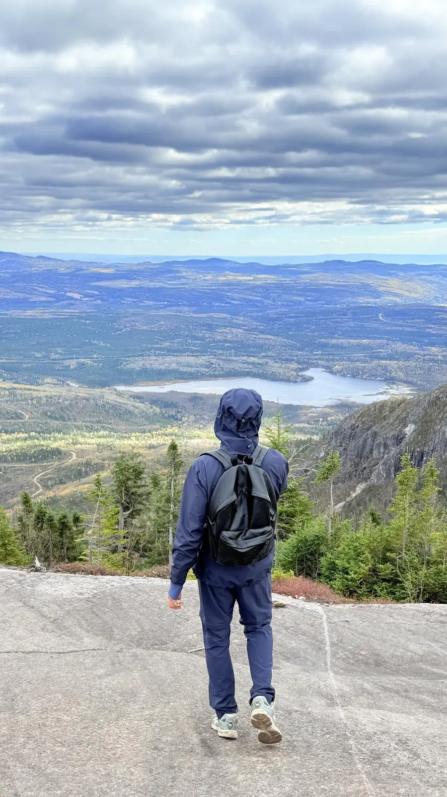
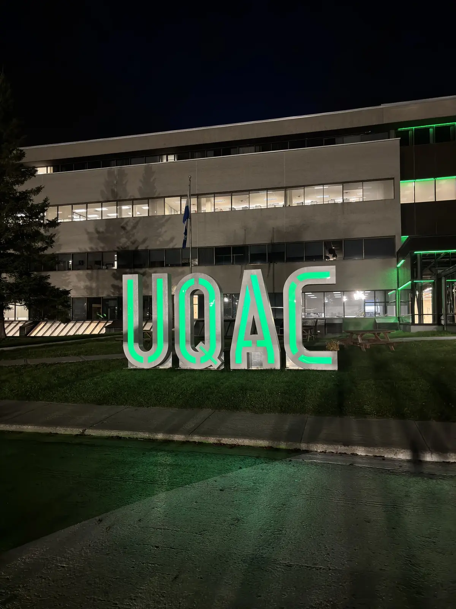
Monter sur un ring devant 400 personnes, c'est apprendre à regarder la peur en face et à rester lucide quand la pression monte, que je gagne ou que je perde. Cette discipline du sang-froid, je la retrouve telle quelle en réunion de partenaires ou face à un imprévu de dernière minute. Pratiquant de boxe anglaise et d'arts martiaux depuis 2022, niveau compétiteur.
Animer une Fresque du Climat, c'est apprendre à accueillir des points de vue très différents sur un sujet qui peut diviser, et à faire émerger une compréhension commune sans jamais forcer les choses. C'est une conviction personnelle autant qu'une compétence : 4 ateliers animés à ce jour, une vingtaine de personnes à chaque fois, et une facilitation que je réutilise dans toutes mes autres missions.
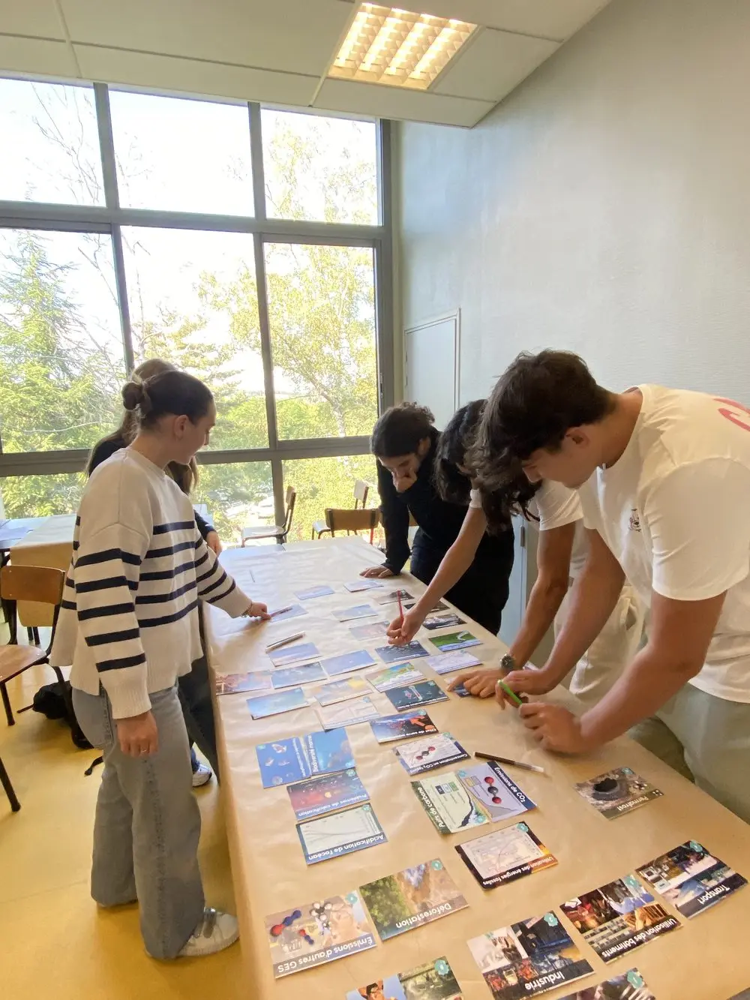
Depuis trois ans, je gère un portefeuille personnel selon une logique de gestion de risque et d'allocation : diversification, arbitrages entre stratégie indicielle (ETF) et sélection de titres, discipline face à la volatilité. C'est un exercice d'analyse et de patience que j'applique de la même façon à un projet : prendre du recul sur les cycles courts, arbitrer avec méthode, et tenir une vision de long terme même quand les résultats ne sont pas immédiats.
Mon vrai rôle de Student Marketeer, c'est de créer du lien : aller vers les gens, sentir l'énergie d'un groupe et savoir la faire monter, transmettre une bonne humeur sincère plutôt que de vendre un produit. Ça demande d'être à l'aise avec l'imprévu et d'aimer profondément le contact humain, sur le terrain, au quotidien.
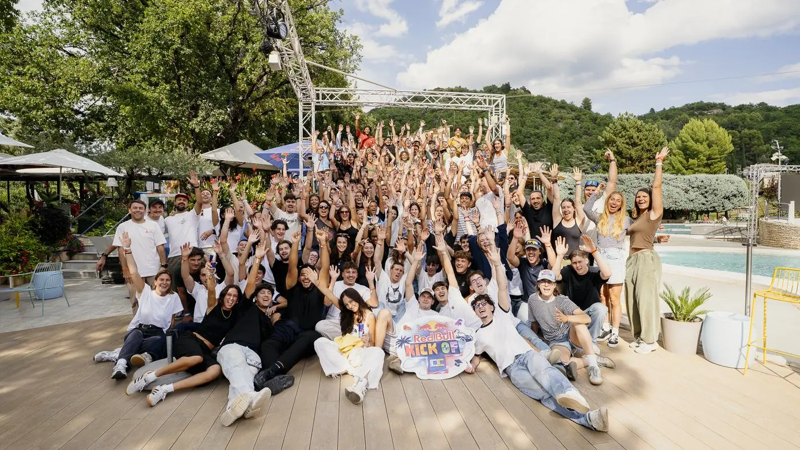
Red Bull Kick Off : toute l'équipe réunieDes formations qui complètent le terrain, en gestion de projet comme en intelligence artificielle.
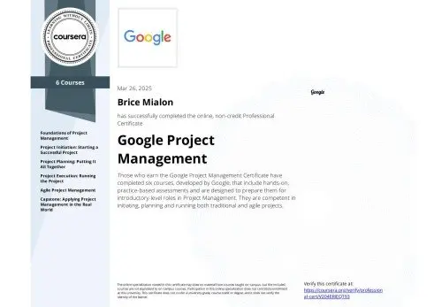
Google Project ManagementGoogle · Coursera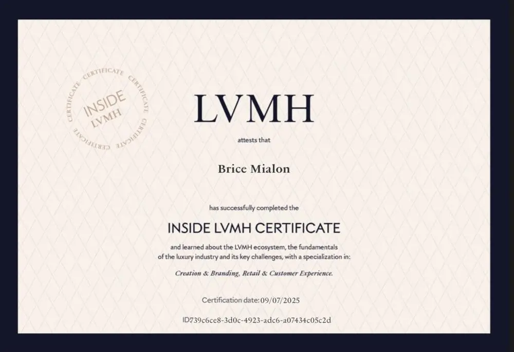
Inside LVMHLVMH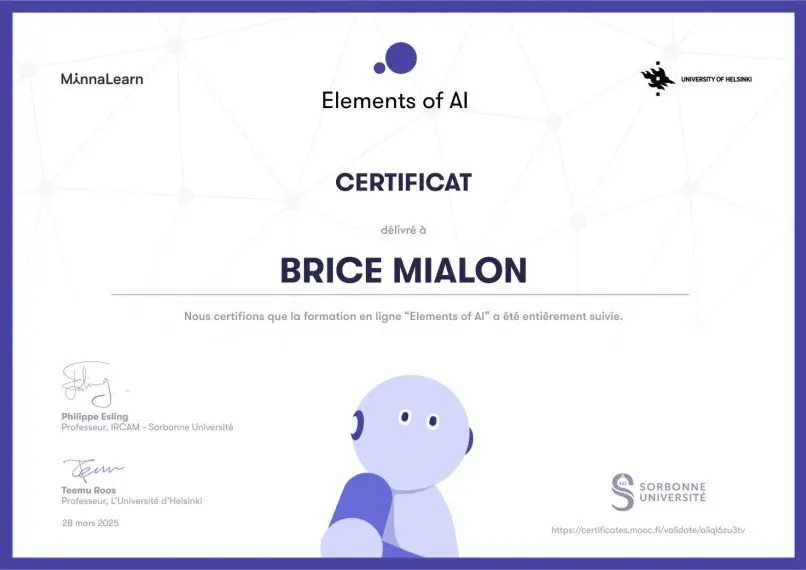
Elements of AISorbonne Université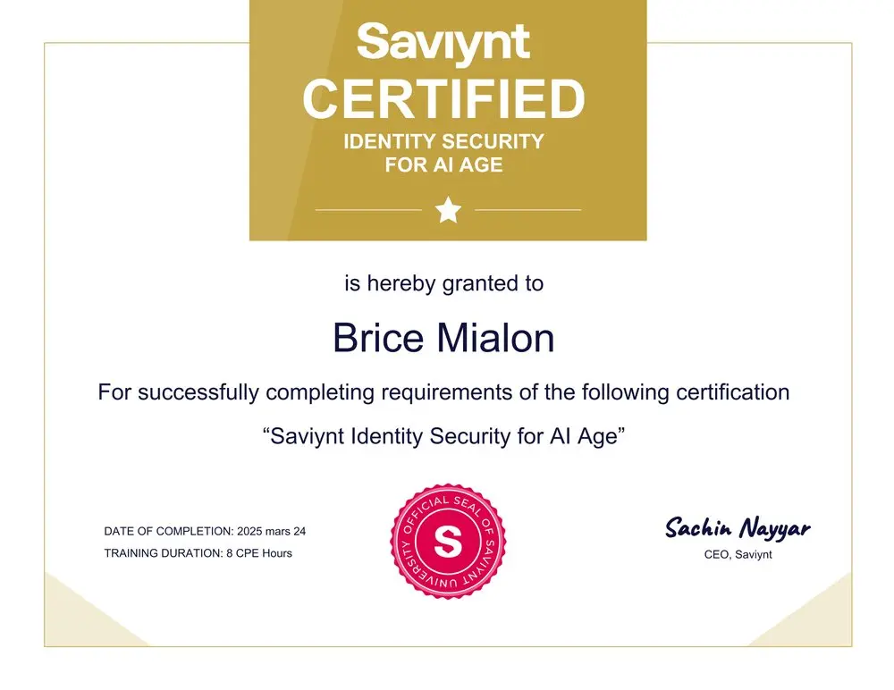
Identity Security for the AI AgeSaviynt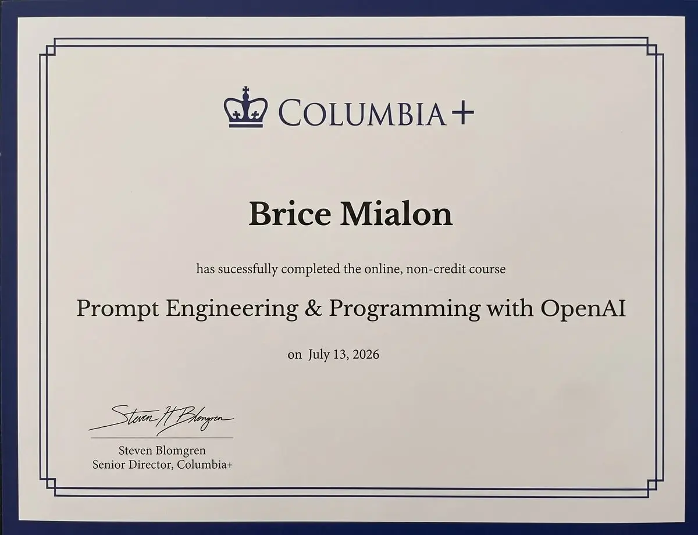
Prompt Engineering & Programming with OpenAIColumbia+ · Columbia UniversityEn recherche d'un stage de 4 mois minimum à partir du 1ᵉʳ avril 2027, fin flexible jusqu'au 24 août selon vos besoins. Ce stage accompagne mon Master CREMS à l'IAE Lille.
Construit avec Claude, l'assistant IA d'Anthropic, en HTML, CSS et JavaScript natifs, sans framework ni template. Sous le capot : chargement différé des vidéos pour un premier rendu instantané, images WebP, animations désactivées si votre système préfère la sobriété, politique de sécurité stricte (CSP), données structurées schema.org. Le code est public sur GitHub.